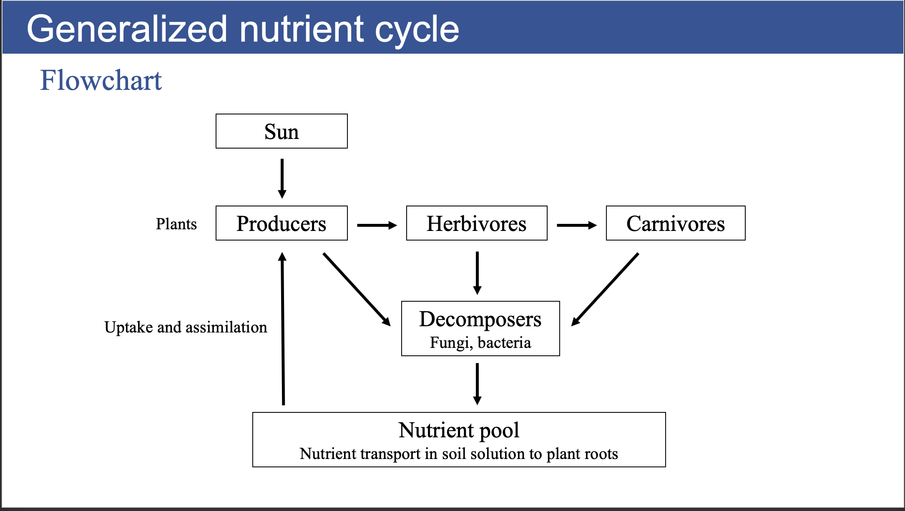
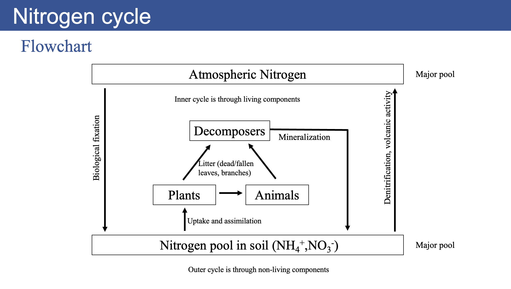
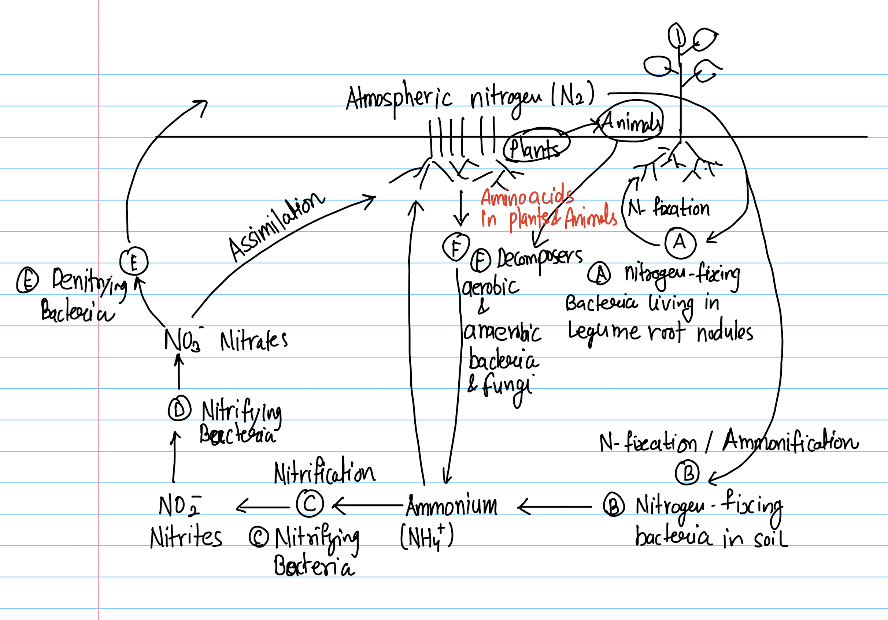
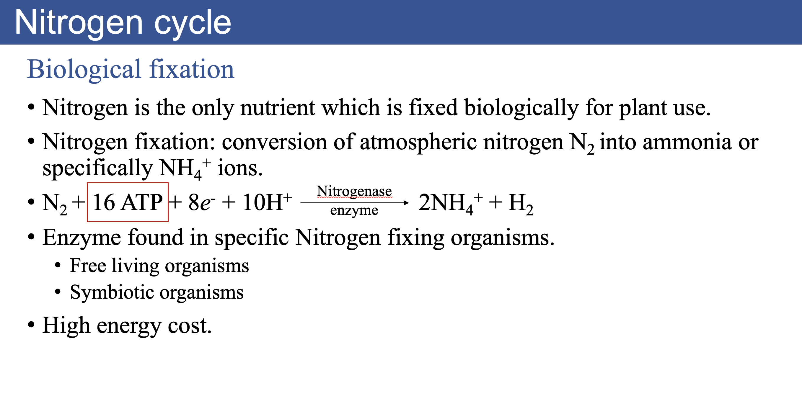
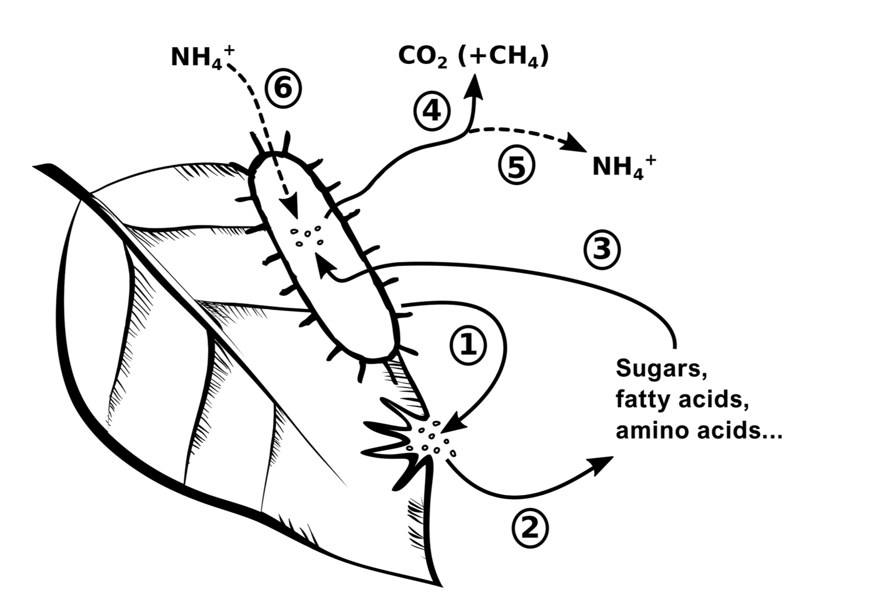
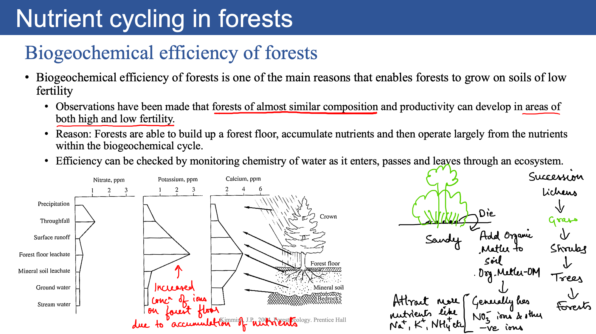
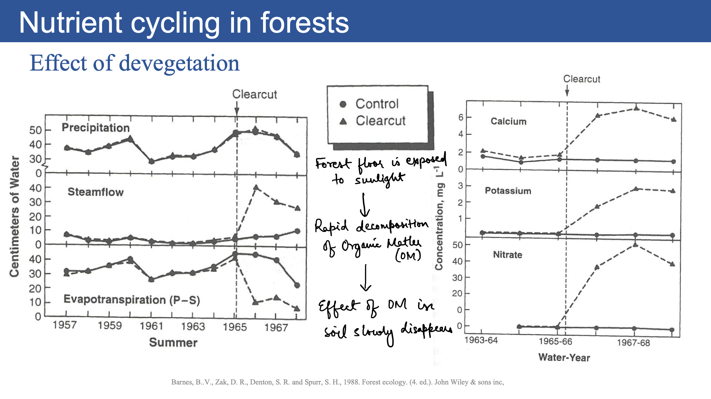

Sustainable Forest Environment (SFE)
Lecture 8: Nutrient Cycles(Last update: 29 May 2025)
Learning Objectives
- Carbon cycle
- Nitrogen cycle
Biogeochemistry
- Geochemistry is the study of the distribution and cycling of chemical elements in Earth’s crust and Interior
- Investigates the compositions and behavior of elements/ compounds in rocks, minerals, soil, water, and the atmosphere.
- Biogeochemistry adds on a biological components to this.
Note
Biogeochemistry is the study of interactions between the
- Biosphere (life)
- Atmosphere (air),
- Hydrosphere (water)
- Geosphere (rocks and soils)
Biogeochemical cycle
Biogeochemical cycle
Biogeochemical cycle \(\rightarrow\) A pathway by which a chemical substance moves through biotic (biosphere or living organisms) and abiotic (lithosphere, atmosphere and hydrosphere) compartments of earth.
Biogeochemical cycles transfer essential elements between Earth’s
- Biosphere
- Atmosphere
- Hydrosphere
- Geosphere
- Cryosphere
Nutrient
A substance used by a plant to survive, grow and reproduce.
Biogeochemical cycles maintain global nutrient balance and sustain life on Earth.
CHNOPS
- Nitrogen: constituent of proteins, nucleic acids, vitamins etc
- Phosphorus: constituent of nucleic acids, ATP, cell membrane and certain proteins
- Potassium: cation-anion balance needed for maintaining cell turgidity, opening and closing of stomata etc.
- Cell turgidity refers to the state of a plant cell when it is swollen and firm due to the uptake of water. It is primarily a result of water entering the cell by osmosis
- Carbon
- Hydrogen
- Nitrogen
- Oxygen
- Phosphorus
- Sulfur
CHNOPS
Note
CHNOPS, six elements are the most abundant elements in living organisms. They are essential elements for life on Earth.
Note
There are other elements which are also needed to sustain life on the Earth, but these elements are not needed in GREAT quantities. Examples include Fe, Mn, and trace metals.
Generalized Nutrient Cycle
Nutrient transport
- Movement of nutrients towards root surfaces in soil solution. It occurs due to two processes: mass flow and diffusion.
- Mass flow: process in which ions move with the flow of water.
- Diffusion: ions move from region of high concentration to low concentration e.g. soil solution to root surface.
Nutrient uptake
- Process by which nutrients in soil solution are actively transported across cell membranes of roots.
- Uptake is controlled by enzymes on the membranes of roots.
- Activity of enzymes increases with increasing nutrient concentration in soil solution until enzyme system is saturated.
- Enzymes are also sensitive to temperatures
- Rapidly growing species like balsam poplar and trembling aspen in warm soils have high uptake capacities of NH4+,NO3- and PO43- as compared to slower-growing paper birch and green alder.
Nutrient assimilation
- Biochemical incorporation of inorganic nutrients, transported into plant cells, into organic compounds such as amino acids, nucleic acids, lipids or other biologically active compounds.
Jack pine
- Has low physiological capacity to uptake NO3- in soil, even when concentrations of NO3- ions is very high.
- Jack pine shows a preference to uptake and assimilate NH4+ ions as compared to NO3- ions from soil solution to meet its Nitrogen demands.
- One reason for this could be that plants must reduce NO3- to NH4+ before it can be assimilated into biologically active compounds.
- This process requires large amounts of energy.
- What is the consequence of planting jack pine in NO3- rich soils?

Different forms of Nitrogen
- Nitrogen exists in several chemical forms in the environment, particularly within the nitrogen cycle
- These forms can be broadly categorized into inorganic and organic forms, each with distinct roles in soil fertility, plant nutrition, and ecosystem functioning.
Inorganic Nitrogen
- Dinitrogen Gas (N₂):
- Ammonium (NH₄⁺):
- Nitrite (NO₂⁻): Rapidly converted to nitrate in aerobic soils.
- Nitrate (NO₃⁻): Highly mobile and a major nitrogen source for plants.
- Nitrous Oxide (N₂O) and Nitric Oxide (NO): Gaseous oxides of nitrogen, By-products of denitrification and nitrification.
Different forms of Nitrogen
Organic Nitrogen
- Amino Acids and Proteins: building blocks of living cells. Present in plant residues, microbial biomass, and animal waste.
- Nucleic Acids: DNA and RNA, essential for genetic information transfer.
- Urea: A nitrogenous compound excreted by animals, can be hydrolyzed to release ammonium.
- Synthetic and naturally occurring organic compound.
- Common nitrogen fertilizer.
- Rapidly converted to NH₄⁺ and CO₂ in soil by urease enzymes.
Nitrogen Cycle
Nitrogen Cycle
- Nitrogen gas \(N_{2}\) makes up about 80% of the atmosphere, but it is not directly usable by plants or animals.
- Nitrogen fixing bacteria convert \(N_{2}\) into ammonia \(\text{NH}_{3}\) or ammonium \(\text{NH}_{4}^{+}\), which can be used by plants and other microbes.
- In this way, nitrogen is the only nutrient which is biologically fixed for plant use
- Nitrogen fixation is the process of converting atmospheric nitrogen (\(N_{2}\)) into ammonia (\(NH_{3}\)) or ammonium (\(NH_{4}^{+}\))
- Nitrifying bacteria convert ammonia into nitrite \(\text{NO}_{2}^{-}\) and then into nitrate \(\text{NO}_{3}^{-}\), which is also usable by plants.
- Denitrifying bacteria convert nitrate back into nitrogen gas, completing the cycle.
Nitrogen Cycle
Nitrogen cycle
Nitrogen Cycle
Free living nitrogen-fixing organisms
- In general, fixation by free living bacteria is relatively small (1 to 5 Kg N/ha/yr).
- Fixation requires large amount of energy and only limited amount of energy is available for free living bacteria in organic soils.
- Examples:
- Azotobacter: aerobic, free-living bacteria that depends on other sources of organic carbon for nutrition.
- Cyanobacteria (blue-green algae): Photosynthetic microorganisms. Their activity is limited in forests due to high light requirement.
Symbiotic nitrogen-fixing organisms
- In general, fixation by symbiotic organisms is much higher relative to free living organisms (30 to 85 Kg N/ha/yr).
- Symbiotic organisms generally inhabit the roots of plants. Plants supply carbohydrates to meet the large energy requirements of nitrogen fixation by the symbiotic organism and in return NH4+ is provided to the plant.
- Examples:
- Actinomycetes: Anaerobic bacteria that infect root hairs and induce the formation of root nodules (sites for N2 fixation).
- Rhizobium: Bacteria that exclusively infect roots of legumes (beans, soybean, peanuts etc.) to form nodules.
- Addition of N2-fixing plants/trees to N-poor soils can help increase rates of biomass accumulation and nutrient cycling during ecosystem development.
Root nodules


Mineralization and immobilization
- Mineralization is the decomposition (i.e., oxidation) of the chemical compounds in organic matter, by which the nutrients in those compounds are released in soluble inorganic forms that may be available to plants.
- Soil microbes break down complex polymer organic molecules to simpler monomers.
- Microbial decomposers assimilate the monomers.
- Microbes either mineralize them into inorganic form \(\text{NH}_{4}^{+}\) or use the monomers for their own biosynthetic needs.
Mineralization and immobilization
- When organic matter has low C:N ratio (less than 25:1), biosynthesis needs of microbes is met by N in organic matter itself and excess N is released (mineralized) as \(\text{NH}_{4}^{+}\) into the environment. When organic matter has high C:N ratio (greater than 30:1), N in organic matter isn’t sufficient for biosynthesis. Then decomposing microbes immobilize \(\text{NH}_{4}^{+}\) from the environment making less \(\text{NH}_{4}^{+}\) available for plant use. As decomposition continues, C in organic matter is consumed more rapidly than N and the C:N ratio reduces and once again mineralization starts releasing \(\text{NH}_{4}^{+}\) into the environment for plant use.
Litter decomposition
- Microbial decomposers release exoenzymes (1), which depolymerize plant biopolymers to soluble monomers (2)
- Microbial decomposers assimilate the monomers (3) and either use the contained organic matter for growth or to obtain energy through mineralization (4)
- Microbial growth leads to an accumulation of microbial biomass within litter. N mineralization leads to a loss of ammonium to the environment (5), but this process is only active if amino acid–N supply (due to protein depolymerization) exceeds microbial N demand.
- Ammonium from the environment can addi- tionally serve to fulfill microbial N demand (6).

Biogeochemical efficiency of forests
Biogeochemical efficiency of forests
Carbon Cycle
Driving factors of carbon cycle:
- Photosynthesis: Conversion of CO2 and water into glucose and oxygen using sunlight (Storage of C in plants).
- Respiration: Conversion of glucose and oxygen into CO2 and water, releasing energy (Release of C from plants).
When Photosynthesis is GREATER than Respiration: Carbon getes stored in the plant, plant grows and size increases
When Photosynthesis is SMALLER than Respiration: Carbon is removed from plant, plant size decreases
Carbon Cycle
Gross vs Net Photosynthesis
- Gross Photosynthesis: Total amount of C plant assimilates from the atmosphere.
- Net Photosynthesis: Balance between total amount of Carbon fixed during photosynthesis and the Carbon lost during respiration.
In simpler terms, gross photosynthesis is the total carbon intake, while net photosynthesis is the carbon intake minus the carbon lost through respiration
C storage in soil
- Plant take up CO2 and convert it to organic C, making up their biomass.
- But storage of C in plants is temporary; When plants die, much of their organic C is converted back to CO2.
- Soil stores the organic C on long term basis.
- Soil microbes break down dead plant matter into more resistant organic molecules. These more robust organic molecules make up the humus layer (O horizon) of the soil.

Kyoto University | Sustainable Forest Environment (SFE)